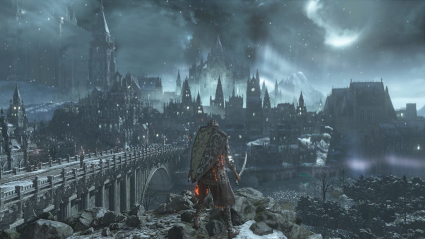
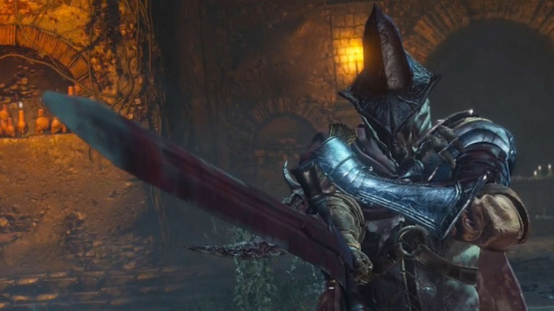
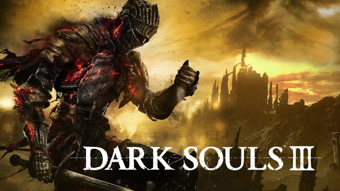

Gráfico
O gráfico não é nada mal, combinado com o incrível design dos mapas fica bem agradável. Você terá Screenshots épicas, aguarde para quando chegar em Irythill.
Jogabilidade
Dark Souls 3 melhorou bastante coisa na sua jogabilidade em relação aos outros jogos, principalmente no quesito combate. Eu achei um jogo bem fluido e gostosinho de se jogar, mas claro que temos o nosso clássico problema de câmera e hitboxes.
Bosses
De longe a melhor parte do jogo, os Bosses são, na maioria das vezes, maravilhosos. Claro que tem suas péssimas excessões, como os Diáconos das Profundezas, mas prepare-se para lendas como Os Vigilantes do Abismo, Rei sem Nome, Pontíficie Sullyvhan, Soul of Cinder etc. Será de tirar o fôlego...
Trilha Sonora
Agora que já falamos dos Bosses, vem a trilha sonora, explêndida! O Boss pode ser péssimo, que sua música será incrível. Já vai organizando sua playlist para óperas e instrumentais.
A "peculiaridade" dos Souls
Todos os jogos dessa saga tem uma peculiaridade: A Dificuldade. Morrer inúmeras vezes para um Boss é muito comum, ficar tempo rodeando mapas, se adaptar vai ser duro. Mas não desista meu guerreiro!! Perseverança em primeiro lugar e encare o desafio!! O bom da dificuldade é a sensação ao passar daquele inimigo extremo, indescritível...
Conclusão
Dark Souls 3 não é perfeito, tem seus problemas como a câmera,alguns bugs, mapas chaaatos. Várias vezes pensei em desistir, mas a parte boa vale muiito a pena. Se você for um jogador casual talvez não te interesse, mas eu garanto, vai ser marcante e digo com toda força: Esse jogo está em meu Coração!!
